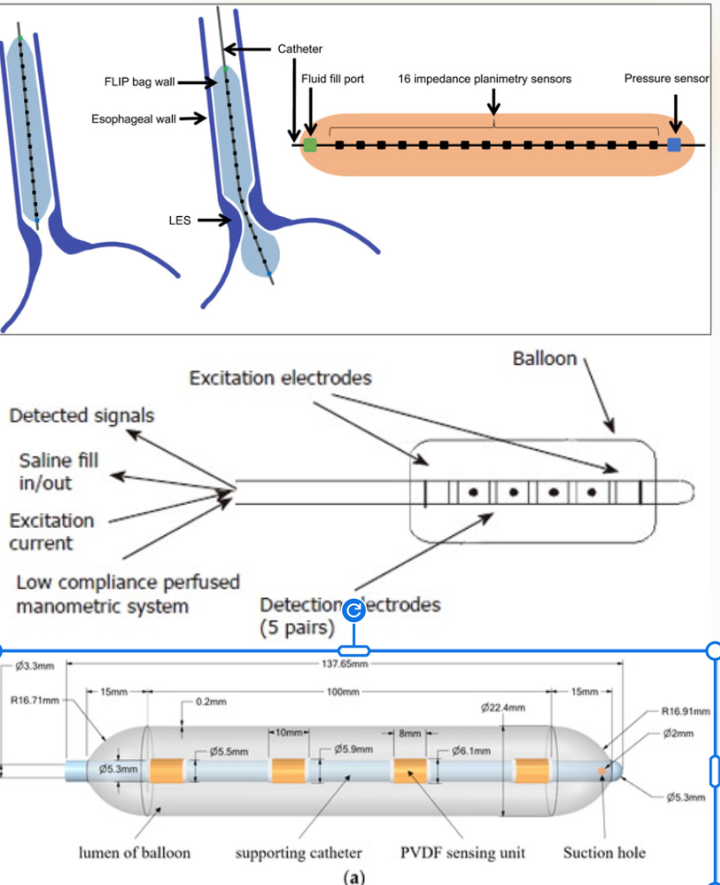
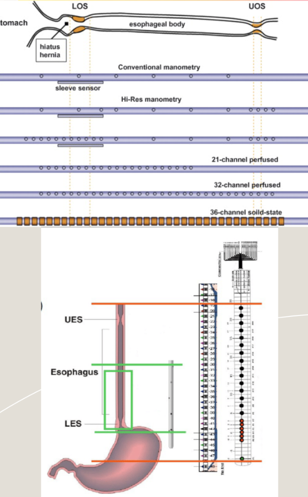
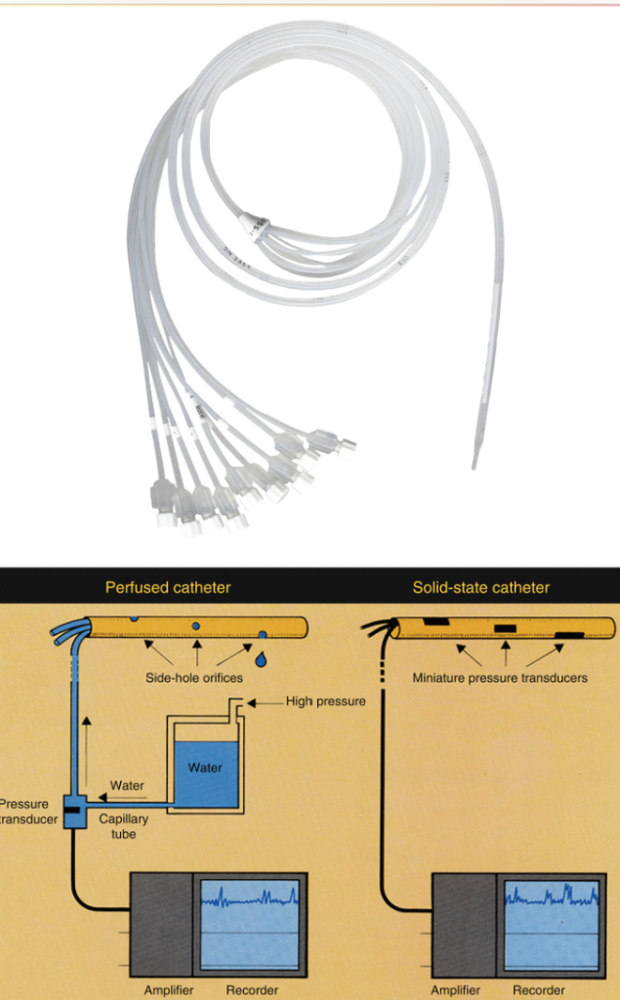
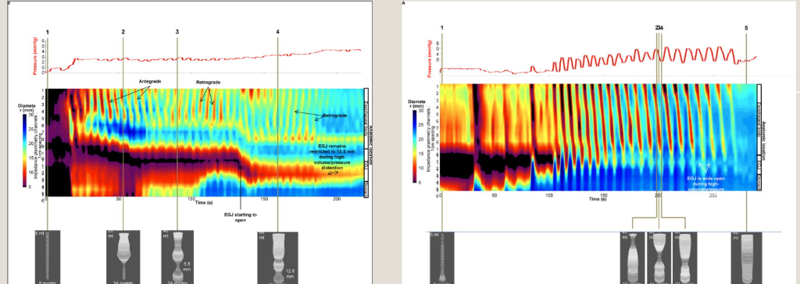
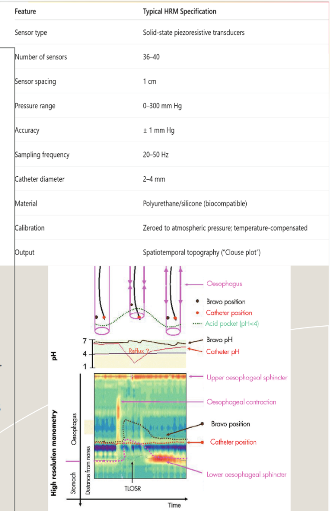
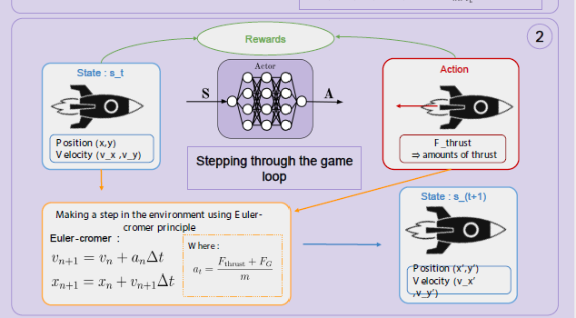
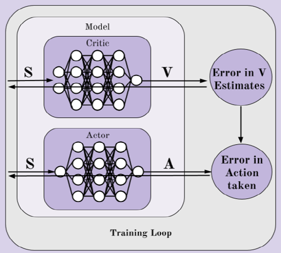
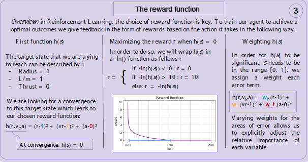
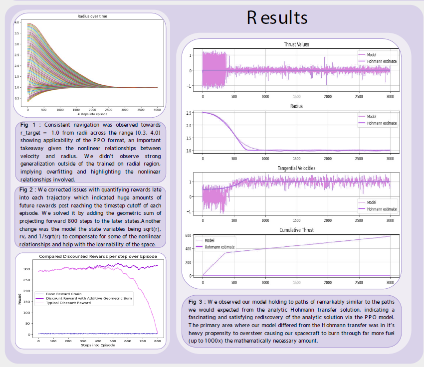

About
I am an undergraduate student at Brown University studying Computer Engineering and Applied Mathematics. I am a researcher in the Brown Visual Computing and Interactive 3D Vision and Learning Lab, as well as the Laboratory for Engineering Man/Machine Systems (LEMS).
Research
- Focused on the theoretical, algorithmic, and engineering foundations of reconstructing 3D structures from multiple 2D images.
- Focus on reconstructing 3D scenes from multiple camera views, addressing mathematical and computational challenges.
- Cover camera models, including intrinsic and extrinsic parameters.
- Perform camera calibration to relate 3D world coordinates to 2D image coordinates.
- Apply epipolar geometry and compute essential/fundamental matrices for relating multiple views.
- Estimate relative camera poses between views.
- Use triangulation methods to recover 3D point positions from corresponding 2D points.
- Employ optimization techniques to improve reconstruction accuracy and robustness.
- Collect visuotactile dataset on single-hand and bimanual manipulation of deformable objects.
- 3D print, assemble the UMI gripper, and integrate tactile sensors into the Brown Interaction Capture System (BrICS).
- Implement deformable 3D Gaussian splatting reconstruction for ground truth particle position and velocity.
Projects
Co‑leading a year‑long effort to convert Redesigning High Resolution Esophageal Manometry (HRM) into a patient‑friendly, clinically robust device through new sensing/form factors, embedded electronics, and clinician‑centric software, validated against today’s standard of care. Scope spans requirements capture, prototyping, UX/human‑factors testing, manufacturability, hospital integration, and IP planning for a functioning medical device prototype.





- Refine black-hole orbital simulation, defining states, actions, and rewards.
- Implement RL agents to maintain stable orbits, avoiding the black hole and boundaries.
- Develop a multi-agent competitive environment with gravitational interactions.
- Optimize RL algorithms for better robustness and efficiency.
- Explore advanced physics models and neural policy adaptations.




Awards & Fellowships
- 2 x Undergraduate Teaching and Research SPRINT Fellowship
- 2 x International Scholars with Honors, 2× Pearson Edexcel Excellence Awards
Work & Teaching
- Sprint UTRA Research Fellow — May 2025–Present, Brown University.
- Engineering TA / Grader — Aug 2024–May 2025, Brown University.
- Work as one of the 24 undergraduate teaching assistants for the class ENGN32/40
- Engaged in course development, improved its webpage, Github repository, and Gradescope autograders, and assignment grading, and attended TA Hours and ED Hours for projects
- Engineering Research Intern — June–Aug 2024
Technical Skills & Interests
Software & Programming
Expert: Python, C++, MATLAB, PyTorch, PyTorch Lightning, scikit-learn, NumPy, SciPy
Fluent: Java, TypeScript, JavaScript, React, Fusion 360, SolidWorks, Golang
Proficient: HTML, CSS, C, Pyret, Qiskit, Pennylane
Languages & Interests
Languages: English, Sinhalese
Interests: Chip Design, Electronics, Reading
Publications
- Heengama, S. et al., "A cost-effective IoT-based intelligent indoor air quality monitoring", Journal of Emerging Investigators (2023).
Education
Brown University — Sc.B. Computer Engineering (Honors) & Applied Mathematics, Aug 2023–May 2027 (GPA: 3.9/4.0).
Colombo International School - Graduated Aug 2023 (A*/A-levels: 4×A*, IGCSE 10×A*) — (GPA 4.0/4.0).
Contact
Collaborations: sanithu_heengama@brown.edu